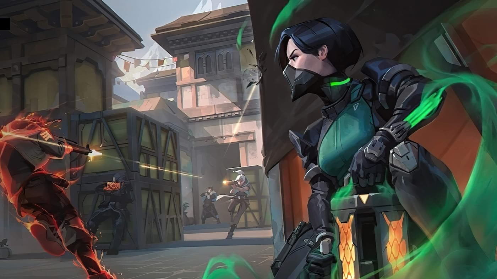
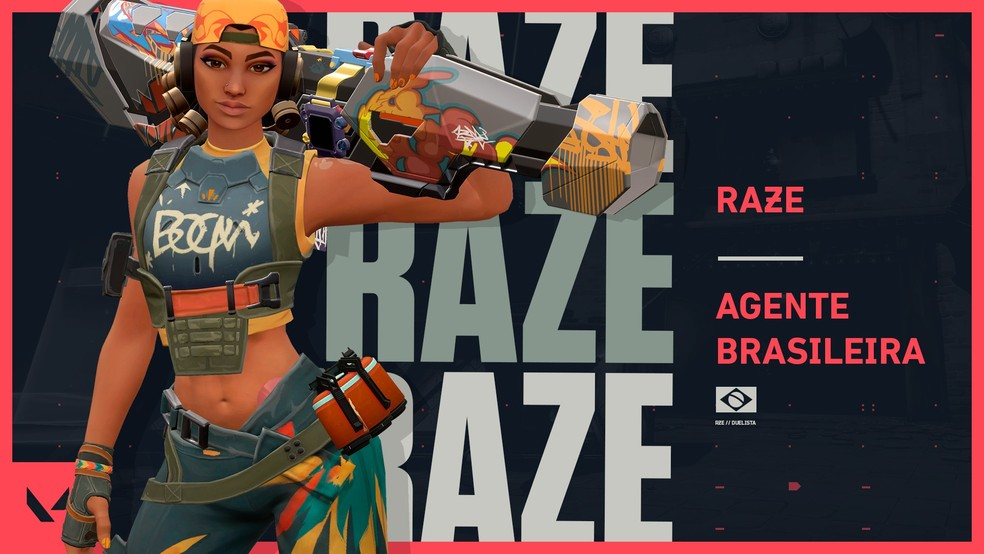
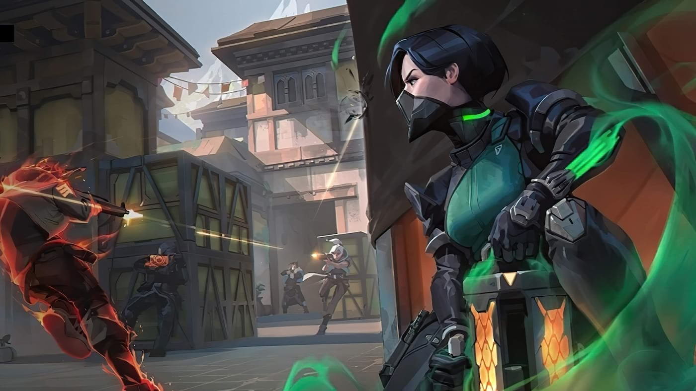
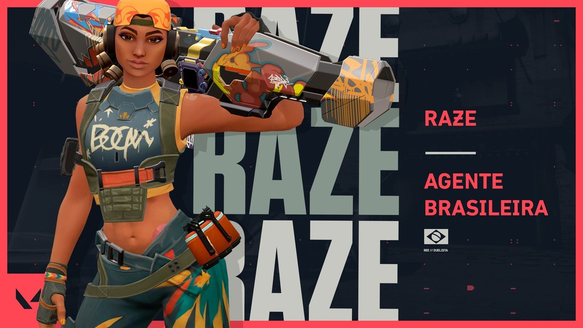

Valorant
Valorant é um jogo eletrônico multijogador gratuito para jogar de tiro em primeira pessoa desenvolvido e publicado pela Riot Games. É o primeiro jogo do gênero desenvolvido pela empresa, sendo anunciado pela primeira vez com o codinome Project A em outubro de 2019, em um evento de comemoração de 10 anos de League of Legends.
Foi lançado em 2 de junho de 2020 para Microsoft Windows.
Duas equipes de cinco jogam uma contra a outra, e os jogadores assumem o papel de "agentes" com habilidades únicas. No modo de jogo principal, a equipe atacante tem uma bomba, chamada Spike, que eles precisam plantar em um local.
Se a equipe atacante proteger com sucesso a bomba e ela detonar, eles ganharão um ponto. Se a equipe defensora desarmar com sucesso a bomba ou o cronômetro de 100 segundos da rodada expirar, a equipe defensora receberá um ponto.
Eliminar todos os membros da equipe adversária também ganha uma rodada. A primeira equipe a vencer o melhor de 24 rodadas vence a partida. O jogo também promove um servidor com tick rate de 128, que garante uma jogabilidade suave e baixo ping com uma expansão global de datacenters.